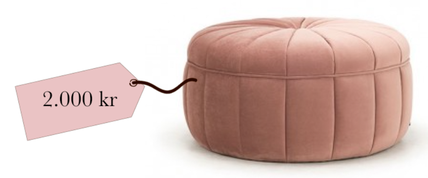

Det er altid de dyre og luksuriøse designer varer vi ser i boligbladene i dag. Som studerende er det ikke det pengene rækker til, men hvad gør man så?
Der findes super mange fine alternativer, som er langt mere budgetvenlige! Vi har samlet nogen af de bedste her.
På mange opdækkede borde i butikkerne ser vi trenden med krystalglas. Mange mærker har fulgt trenden og har lavet deres egen version. Nogen af mærkerne er Frederik Bagger, Lene Bjerre og Lyngby.
Dog har, den studerendes bedste ven, IKEA også lavet deres version, bare til en brøkdel af prisen - fantastisk!
Det er ikke sikkert du kender den på navnet, men du har helt sikkert set stolen før. Stolen har flere funktioner, den kan både bruges på altanen (hvis man skulle være så heldig) eller som pyntestol i stuen med et lammeskind hen over.
Den flotteste look-a-like er dog ikke langt væk. Flere butikker, som IDEmøbler, Jysk og Bilka, har lavet deres version i alle mulige farver - og så til en 10’ende del af prisen!
En af tidens hotteste trends i stuen er puffer. Puffer i alle mulige former og farver. Puffen pynter fint og er perfekt til det lille hjem, hvor der måske ikke er plads til en sofa med chaiselong - med puffen kan du stadig flyde i den lille sofa. Disse puffer er dog slet ikke billige og kan nemt koste 1.000 kr, hvis de skal være det ”rigtige” mærke.
Bilka og Søstrene Grene har laet fine alternativer til en fordelagtig pris. De er helt lige så smukke og funktionelle - det er noget vi kan lide!